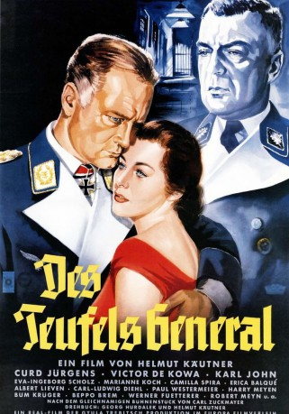
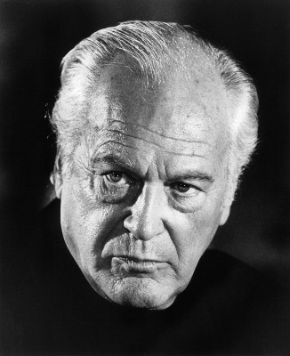

#10987 Teufels General, Des
 
 IMDB-Wertung: 7.4 / 10
IMDB-Wertung: 7.4 / 10  Metascore: 0
Metascore: 0 
Luftwaffengeneral Harras, der im Zweiten Weltkrieg von der SS verpflichtet werden soll, damit der Krieg in der Luft gewonnen werden kann, erkennt dass er an dem grausamen, unmenschlichen Krieg mitschuldig ist.
Jahr: 1955
Dauer: 120 Minuten
FSK: 12
Land: West-Deutschland Studio: Europa-Filmverleih AGTonspuren:
Untertitel:
Auflösung: 720p (992x720) Größe: 5591 MB
Genre: Drama, Krieg
Regisseur: Helmut Käutner
Drehbuch: Carl Zuckmayer, George Hurdalek, Helmut Käutner
Soundtrack:
Darsteller:
-  Curd Jürgens als General Harry Harras
- Viktor de Kowa als SS-Gruppenführer Schmidt-Lausitz
- Karl John als Ingenieur Karl Oderbruch
- Marianne Koch als Dorothea 'Diddo' Geiss
- Camilla Spira als Kammersängerin Olivia Geiss
- Albert Lieven als Oberst Friedrich Eilers
- Paul Westermeier als Otto Korrianke, Fahrer von Harras
- Karl Ludwig Diehl als Generaldirektor Hugo Mohrungen
- Harry Meyen als Leutnant Hartmann
- Werner Fuetterer als Baron von Pflunck
- Wolfried Lier als Kellner Detlev
 Ingrid van Bergen als Lyra Schöppke
Ingrid van Bergen als Lyra Schöppke- Eva Ingeborg Scholz als Waltraut 'Pützchen' Mohrungen
- Erica Balqué als Anne Eilers
- Bum Krüger als Hauptmann Lüttjohann
- Beppo Brem als Hauptmann Pfundtmayer
- Robert Meyn als Generalleutnant von Stetten
- Joseph Offenbach als Kriminalrat Zernick
- Reinhold Nietschmann als Geschäftsführer Otto
- Wolfgang Neuss als Polizei-Fotograf
- Rudolf Fenner als 2. SD-Beamter
- Horst Beck als 1. SD-Beamter
- Jochen Meyn als Kellner Francois
- Thea Thiele als Jenny Rosenfeld
- Inge Meysel als Frau Korrianke
- Gustl Busch als Putzfrau bei Harras
- Emmy Percy-Wüstenhagen als Wirtschafterin Therese
- Werner Schumacher als 2. SS-Wachmann
- Joachim Hess als 1. SS-Wachmann
- Horst Breitenfeld als 3. SS-Wachmann (uncredited)
- Hans Daniel als Hauptmann Hassdenteufel (uncredited)
- Werner Riepel als Kleinschmidt, Fahrer von Göhring (uncredited)
- Erich Scholz als Oberleutnant Vretske (uncredited)
- Gerd Vespermann als Theaterregisseur Rösler (uncredited)
Datei: X:\1950-1959\Teufels General, Des (1955, FSK12, 992x720).mkv seit 16.04.2019
Festplatte: Gemischt-01+Anime
 Es gibt insgesamt 141 Filme in der Gruppe '1950-1959'
Es gibt insgesamt 141 Filme in der Gruppe '1950-1959'